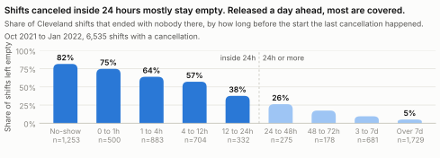
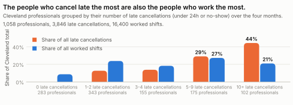
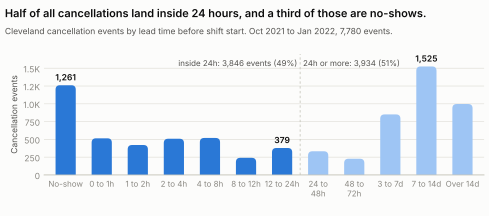
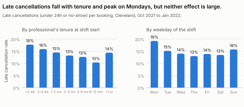

I am asking for approval to build Confirm or Release and pilot it in Cleveland. Every booked shift must be confirmed by the professional in the app between 48 and 24 hours before it starts. One tap on the reminder we already send does it. If a shift is not confirmed by the 24 hour mark, it goes back on the marketplace automatically, with no penalty to the professional, and the facility is told right away.
It needs about four engineering weeks, no new cash incentives, and an eight week randomized pilot. The goal is a 20 percent cut in late cancellations per booking, measured against a control group in Cleveland, within 90 days of approval, with no drop in fill rate. If the pilot shows less than a 10 percent cut, I will stop it and say so.
I worked from the Cleveland shift log and the cancellation log for October 2021 through January 2022 (method in Appendix A). The headline numbers:
| Shifts posted by 67 facilities | 41,040 | 40 percent worked, 25 percent never filled, 34 percent deleted by the facility, 1 percent assigned but never verified |
| Bookings by 1,058 professionals | 28,785 | final assignments plus cancellation events |
| Cancellations | 7,780 | 27 per 100 bookings |
| Late cancellations (under 24 hours, or no-show) | 3,846 | 13.4 per 100 bookings; half of all cancellations |
| No-call no-shows | 1,261 | 4.4 per 100 bookings |
| Shifts that lost their professional inside 24 hours | 3,672 | 68 percent empty at start, 7 percent deleted, 24 percent worked |
Two findings changed how I think about this problem, and a third explains why it has been hard to see.
Of the 3,672 shifts that lost their professional inside 24 hours, two in three were still empty when the shift started. Another 7 percent were deleted by the facility. Only one in four was worked. Now look at shifts released a day or more ahead: 26 percent were empty when the release came 24 to 48 hours out, 17 percent at 48 to 72 hours, and 5 percent at a week or more (Figure 1). Given a day or more, the marketplace refills about half of these shifts and facilities cover most of the rest themselves. It just needs time.
Seen from the facility's side, this is the whole problem. Of the booked Cleveland shifts that ended with nobody there, 91 percent had a cancellation inside 24 hours. A cancellation three days out is an inconvenience. A cancellation three hours out is an empty floor.

775 professionals canceled late at least once. The 277 who did it five or more times account for 73 percent of all late cancellations. They also worked 48 percent of all Cleveland shifts (Figure 2). Their late rate is high, 14 to 21 percent of their bookings, but these are not casual users. They book a lot, so they cancel a lot. The pattern is also stable: a professional's late rate in the first two months predicts the next two (correlation 0.59).
I tested the obvious response on this data: enforce attendance harder. A seven day suspension after two late cancellations in 30 days would have prevented 28 percent of late cancellations and cost 14 percent of worked shifts, about two fills lost for every late cancellation avoided. A three strike version prevents 20 percent and costs 9 percent. The 2021 policy applied exactly as written, with no excusals, prevents 38 percent and costs 21 percent. In a market where one in four posted shifts already goes unfilled, that trade hurts facilities more than it helps. The simulation ignores deterrence, so the true cost is somewhat lower, but the direction is not in doubt. It also explains why our triage team excused so many offenses: they could see what losing these people would do to fill.

Late cancellations cluster in the final hours. Leaving no-shows aside, the median late cancellation comes 3.2 hours before the start, and the busiest hours for canceling are noon to 2 p.m. and 5 to 7 a.m., right before the PM and AM shifts. No-shows are worse. The median no-show is logged 43 hours after the shift started. The facility learns at 7:15 a.m. that nobody is coming. We learn two days later. A no-show is rarely a sign of someone who has left: only about one in fifteen is that professional's last event with us, and most keep booking, though one in six never works another shift in the window. It is a shift someone still held and stopped acting on.
So the behavior I am dealing with is this: committed, high volume professionals who decide late and tell us later, or never. That is a timing problem, and timing is something a product can change.
I worked backwards from two outcomes. For a facility: by this time tomorrow you know who is coming, and if someone is not, the shift is already back in front of a thousand professionals. For a professional: keep the flexibility, and never be punished for a plan that changed, as long as you tell us a day ahead.
Today a booking is a one time promise made far in advance (the median shift is posted nine days out). Nothing between the booking and the shift asks the professional to recommit, and nothing happens if they have silently moved on. Confirm or Release changes what a booking means. Booking holds the shift. Confirming at 24 hours keeps it.
Confirm or Release is cheap, it rides on a channel we already have, it is fair to professionals, and it moves the one variable the data says matters: lead time.
I split the 3,846 late cancellations by what the plan can touch. Numbers are per four months in Cleveland.
Together that is 859 late disruptions turned into day-ahead releases, a 22 percent cut in the late rate, from 13.4 to about 10.4 per 100 bookings. Applying the outcome rates in Table B2, the releases keep about 320 shifts per four months from going empty, roughly 950 a year in Cleveland. About 175 of the 320 get worked by a replacement; facilities cover or delete the rest, which still beats an empty floor. If a release at exactly 24 hours behaves like today's 24 to 30 hour cancellations rather than the whole 24 to 48 hour bucket, the saving is about 270 instead of 320. Every one of the 859 shifts gives the facility a day of notice instead of three hours or none.
In dollars, the shifts that were not worked after a late cancellation carried about $800K in billings over four months, or $2.4M a year in Cleveland, of which about $530K is our revenue at a 22 percent take. The 175 recovered worked shifts per four months are worth roughly $160K of billings a year in Cleveland, about $36K of revenue. Cleveland is about a tenth of the marketplace by cancellation volume, so across markets that is about $1.6M in billings and $360K in revenue a year. That pays for the build several times over, but the dollars are not the point. Late cancellations and no-shows predict facility churn, which the brief gives and four months of data is too short to show, and a facility that leaves takes every future shift with it.
There is a cost side too. If professionals let shifts they meant to work lapse through inattention, some go empty. The plan breaks even if about 7 percent of would-be-worked bookings are released by mistake and not taken back; at 1 percent the cost is about 40 empty shifts per four months against 320 saved. The guardrails in section 6 watch this. If my conversion assumptions are half right, the plan still saves about 160 shifts per four months and pays for itself. If they are wrong, the pilot will say so inside eight weeks.
| When | What | Who |
|---|---|---|
| Week 1 to 2 | Build: confirmation state on bookings, the notification sequence, the release job, facility status, and take it back. | One backend engineer, one mobile engineer, a designer at half time. I own the spec and the dashboard. |
| Week 3 | Dry run with 50 Cleveland professionals. Fix copy and timing. | Me, with the Cleveland ops lead. |
| Week 4 to 11 | Randomized pilot. Cleveland professionals are split at random: half get Confirm or Release, half keep today's reminders. About 6,700 bookings per arm, enough to detect a 20 percent change in the late rate once clustering within a person is allowed for. | Me. Weekly readout to this group. |
| Week 12 | Decision: ship, extend, or kill. | This group. |
| Week 13 to 16 | If shipped, roll out to all markets in two waves, largest markets first. | Me, with market ops leads. |
Everything below is measured as treatment against control, except fill rate, which is market-wide and is compared with the eight weeks before the pilot. Released shifts can be picked up by control professionals, which flatters control; that bias runs against the plan, so it is safe. I will publish the dashboard weekly with both arms side by side.
| Metric | Baseline | Target by week 12 | Red line |
|---|---|---|---|
| Primary | |||
| Late disruption rate: late cancellations plus no-shows per 100 bookings | 13.4 | At least 20 percent below control (about 10.7 on today's base) | Less than 10 percent below control at week 12: kill |
| Booked-then-empty rate: booked shifts that reach their start with nobody there | 11.2% | 9.9% | No movement by week 8: review |
| Secondary | |||
| No-show rate per 100 bookings | 4.4 | 3.3 | |
| Refill rate of disrupted shifts: a replacement found and worked | 23% | 30% | |
| Share of disruptions and releases that came with a full day's notice | 0% | 22%, the modeled conversion | |
| Guardrails | |||
| Fill rate: worked shifts over posted shifts, market-wide | 40% | Within one point of the eight weeks before the pilot | Below that: review |
| Worked shifts per active professional, and weekly active professionals | flat | Flat against control | Down 5 percent against control: review |
| Confirmation rate among professionals who go on to work the shift | new | 90 percent or more | Below: the prompts are not landing, fix copy and timing |
| Take-backs: releases re-claimed by the same person | new | Under 20 percent of releases | Above: the window is too aggressive |
| Confirmed-then-late rate | new | Well below 13.4 | At today's rate: confirmation is reflexive and the plan is not working |
If assumption 6 is wrong, the plan is cheap and reversible and we will know in eight weeks. Nothing else on this list changes the recommendation.
Sources. Cleveland_shifts_logs: 41,040 shifts, one row per shift in its final state (professional assigned, verified, deleted, charge rate, hours). Cancel_logs: 78,073 cancellation events across the marketplace, of which 7,780 join to Cleveland shifts by Shift ID. All rates in this document use the Cleveland join. Booking_logs was not used; bookings were reconstructed as described below.
Definitions. Late cancellation: a WORKER_CANCEL with lead time under 24 hours, or any NO_CALL_NO_SHOW. Lead time: shift start minus cancellation timestamp, in hours, as given in the log and verified against the timestamps. Worked: Verified is true. Deleted: the Deleted flag is set. Empty (unfilled): not verified, not deleted, nobody assigned. Refilled: worked, and the final professional differs from the last one who canceled. Booking: a final assignment in the shift log or a cancellation event, 28,785 in total. Fill rate: worked over posted. Booked-then-empty: ever booked shifts that ended empty, 2,744 of 24,566.
Methods. Professional tenure uses the account creation time embedded in each Worker ID (a MongoDB ObjectId); the same field on Shift IDs matches the shift Created At column to the second. Shift swapping: for each cancellation, whether the same Worker ID has a verified Cleveland shift whose window overlaps the canceled shift. Policy simulation: each professional's bookings in start order; after the k-th late cancellation within 30 days, a seven day suspension; late cancellations inside a suspension count as avoided and worked shifts inside it as lost; no refill and no deterrence assumed. Local time is Eastern with daylight saving (America/New_York). The two and three strike rules are simplifications of the 2021 policy; Table B5 also applies the written policy mechanically. 31 cancellation rows carry a Start a few hours off the shift log's (rescheduled shifts); lead times follow the cancellation log. A crude churn check, each facility's posting growth from the first two months to the last two against its late rate, shows no negative relationship in this window; four months is too short to see churn, so the churn link is taken from the brief. Dollar figures exclude rows with a $0 charge rate. Code and tables are in the accompanying repository folder.
B1. Cleveland by month. Shift late rate is late-disrupted shifts over booked shifts; late per 100 bookings is the event-level rate behind the 13.4 headline.
| Month | Posted | Booked shifts | Bookings | Worked | Late shifts | No-show shifts | Empty | Deleted | Shift late rate | Late per 100 bookings | Fill rate |
|---|---|---|---|---|---|---|---|---|---|---|---|
| Oct 2021 | 7,863 | 4,132 | 4,682 | 2,808 | 574 | 182 | 2,241 | 2,787 | 13.9% | 12.6% | 36% |
| Nov 2021 | 7,871 | 5,085 | 5,930 | 3,351 | 720 | 194 | 1,434 | 2,998 | 14.2% | 12.8% | 43% |
| Dec 2021 | 11,799 | 7,168 | 8,461 | 4,657 | 1,107 | 373 | 3,233 | 3,706 | 15.4% | 13.7% | 39% |
| Jan 2022 | 13,506 | 8,180 | 9,711 | 5,584 | 1,271 | 504 | 3,255 | 4,490 | 15.5% | 13.8% | 41% |
B2. Outcome of shifts with a cancellation, by lead time of the last cancellation (Figure 1 data).
| Lead time of last cancellation | Shifts | Refilled | Worked | Empty | Deleted | Worked rate | Deleted rate | Empty rate |
|---|---|---|---|---|---|---|---|---|
| No-show / after start | 1,253 | 173 | 197 | 1,022 | 33 | 15.7% | 2.6% | 81.6% |
| 0 to 1 hour | 500 | 68 | 76 | 374 | 47 | 15.2% | 9.4% | 74.8% |
| 1 to 4 hours | 883 | 238 | 249 | 564 | 64 | 28.2% | 7.2% | 63.9% |
| 4 to 12 hours | 704 | 220 | 224 | 402 | 63 | 31.8% | 8.9% | 57.1% |
| 12 to 24 hours | 332 | 138 | 142 | 125 | 58 | 42.8% | 17.5% | 37.7% |
| 24 to 48 hours | 275 | 127 | 130 | 72 | 65 | 47.3% | 23.6% | 26.2% |
| 48 to 72 hours | 178 | 92 | 96 | 31 | 45 | 53.9% | 25.3% | 17.4% |
| 3 to 7 days | 681 | 346 | 369 | 65 | 231 | 54.2% | 33.9% | 9.5% |
| Over 7 days | 1,729 | 955 | 1,018 | 89 | 602 | 58.9% | 34.8% | 5.1% |
B3. Cleveland cancellation events by lead time (Figure C1 data).
| Lead time | Events | Share |
|---|---|---|
| No-show | 1,261 | 16.2% |
| 0 to 1 hour | 515 | 6.6% |
| 1 to 2 hours | 421 | 5.4% |
| 2 to 4 hours | 509 | 6.5% |
| 4 to 8 hours | 520 | 6.7% |
| 8 to 12 hours | 241 | 3.1% |
| 12 to 24 hours | 379 | 4.9% |
| 24 to 48 hours | 333 | 4.3% |
| 48 to 72 hours | 228 | 2.9% |
| 3 to 7 days | 851 | 10.9% |
| 7 to 14 days | 1,525 | 19.6% |
| Over 14 days | 997 | 12.8% |
B4. Professionals grouped by number of late cancellations (Figure 2 data).
| Segment | Professionals | Bookings | Worked | Late | Share of late | Share of worked | Late rate |
|---|---|---|---|---|---|---|---|
| 0 late cancellations | 283 | 2,023 | 1,425 | 0 | 0.0% | 8.7% | 0.0% |
| 1 to 2 late cancellations | 343 | 5,896 | 3,900 | 487 | 12.7% | 23.8% | 8.3% |
| 3 to 4 late cancellations | 155 | 4,841 | 3,003 | 527 | 13.8% | 18.3% | 10.9% |
| 5 to 9 late cancellations | 175 | 7,870 | 4,470 | 1,114 | 29.1% | 27.3% | 14.2% |
| 10+ late cancellations | 102 | 8,131 | 3,442 | 1,694 | 44.3% | 21.0% | 20.8% |
B5. Attendance policy simulations on the four months of Cleveland bookings. Lost shifts count verified shifts only.
| Rule | Suspensions | Deactivations | Late avoided | Share of late | Worked shifts lost | Share of worked | Lost per avoided |
|---|---|---|---|---|---|---|---|
| 2 late in 30 days, then seven day suspension | 1,147 | 0 | 1,085 | 28% | 2,333 | 14.2% | 2.2 |
| 3 late in 30 days, then seven day suspension | 679 | 0 | 757 | 20% | 1,442 | 8.8% | 1.9 |
| 2021 policy as written, no excusals | 891 | 147 | 1,476 | 38% | 3,486 | 21.3% | 2.4 |
B6. Late rate by role, shift type, and weekday (Eastern time), per booked shift, for roles with at least 100 booked shifts. NURSE rows are $0 placeholder shifts (assumption 8).
| Cut | Value | Booked shifts | Late rate | No-show rate |
|---|---|---|---|---|
| Role | CNA | 18,451 | 15.4% | 5.6% |
| Role | LVN | 4,720 | 12.4% | 3.1% |
| Role | NURSE | 238 | 76.1% | 21.0% |
| Role | RN | 1,146 | 6.0% | 1.1% |
| Shift type | AM | 8,282 | 15.3% | 6.0% |
| Shift type | CUSTOM | 573 | 13.6% | 6.3% |
| Shift type | NOC | 7,603 | 14.2% | 4.1% |
| Shift type | PM | 8,108 | 15.4% | 4.9% |
| Weekday | Mon | 3,225 | 18.6% | 7.0% |
| Weekday | Tue | 3,118 | 14.4% | 4.9% |
| Weekday | Wed | 3,180 | 13.1% | 3.9% |
| Weekday | Thu | 3,347 | 13.3% | 4.1% |
| Weekday | Fri | 3,655 | 14.1% | 4.9% |
| Weekday | Sat | 4,034 | 13.6% | 4.8% |
| Weekday | Sun | 4,006 | 17.4% | 6.0% |
B7. Late rate by professional's tenure at shift start, per booking (Figure C2 data).
| Tenure at shift start | Bookings | Late | Late rate | No-show rate |
|---|---|---|---|---|
| Under 2 weeks | 1,088 | 193 | 17.7% | 5.4% |
| 2 to 4 weeks | 2,108 | 335 | 15.9% | 5.3% |
| 1 to 2 months | 4,444 | 645 | 14.5% | 4.8% |
| 2 to 3 months | 4,271 | 566 | 13.3% | 4.0% |
| 3 to 6 months | 7,823 | 993 | 12.7% | 4.3% |
| 6 to 12 months | 5,267 | 548 | 10.4% | 3.4% |
| Over 1 year | 3,759 | 542 | 14.4% | 4.5% |

